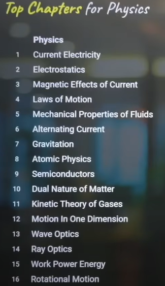
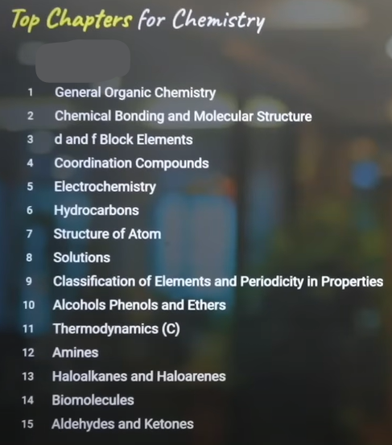
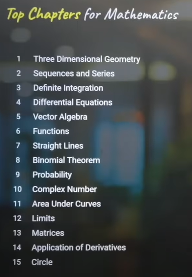

Online JEE resources
My take on JEE
Firstly, I would like to clarify that these resources are not meant for bookworms — because I believe they
will always go beyond what's required and, as a result, they’ll achieve more in the end.
I'm creating this for students like me — those who often feel they lack proper guidance and are always
looking for a smarter, more focused path. Students who want to know the minimum amount of material they need
to cover just to get across the line.
They're ready to work hard — just not overdo it.
Everyone comes from different circumstances and environments, but in the end, it doesn’t matter how you do
it. Just remember: you have to do it anyway.
PHYSICS
Most scoring PHYSICS chapters

-
Completely revise your full chapter notes for once ,with full dedication and remove all doubts that
you are facing in understanding any topic.
-
REVISION SECTION:
Refer to these short notes from Eduniti (Take the printouts... one for 11th and one for 12th)
Eduniti Physics Short Notes Class
11th
Eduniti Physics Short Notes
Class 12th
-
PYQs SECTION:
Now you have to solve the top 200 PYQs from the following sources :
It will be much better if u take the printout and try solving all these questions by yourself before
jumping to solutions.
-
After completing all these...u should go for solving year 2025 pyqs in the form of mock tests.
Put your timer for 1 hour and start to solve like u are giving a real exam.
CHEMISTRY
Most scoring CHEMISTRY chapters

REMEMBER: Inorganic chem is all about 80% revision time and 20% question practise.
Organic chem is all about 50% revision time and 50% question practise.
Physical chem is all about 20% revision time and 80% question practise.
-
Completely revise your full chapter notes and get most of your concepts cleared ASAP.
-
REVISION SECTION:
Refer to these videos from Dexterchem for revision especially for organic and physical.
Dexterchem Revision series
Dexterchem Physical chemistry
Formula marathon
Inorganic chemistry can be tackled to a really good extent once u have read ncert thoroughly.So, if u
have someone, who can tell u what's important while u read a chapter is no less than a boon.
So, checkout this Buniyaad series playlist from vora classes and read ur ncert with them:
Vora classes for Inorganic chemistry reading pt1.
Vora classes for Inorganic chemistry reading pt2.
Organic chemistry requires as much revision as practise. So it's better to keep revising it through
short notes and videos while u practise a ton of questions.
Pankaj sir's organic named
reactions in one shot
One more thing in case of organic chemistry is that ..solving jee advance pyqs is much necessary here
..even when ur main focus is jee mains.
So, atleast try to solve 10 yrs of jee advance organic chemistry pyqs in addition with 5 yrs of jee
mains organic pyqs.
-
PYQs SECTION:
Now you have to solve the PYQs but instead of solving it from the books ,i would suggest u to do it
from an app named MARKS.
Here, u will get a feel of solving questions from computer screen plus u can bookmark the question
which u were not been able to solve for future practise.
These bookmarked questions are the one's which u will focus on ,later. So , use all the features of
this app to boost ur preparation.
Go to the Marks web by clicking on this image:

One more thing which this app offers is the solutions to pyqs.
Although, it's a paid feature i
will suggest u to take it as it will save a lot of ur time that u will ruin by running here and
there for the solution.
-
After completing all these...u should go for solving year 2025 pyqs in the form of mock tests.
Put your timer for 1 hour and start to solve like u are giving a real exam.
MATHS
Most scoring MATHS chapters

I don't know what others say about scoring well in Maths, but from my own preparation journey, one thing
has become very clear:
The more questions you solve, the better your marks will be.
Maths doesn't just test your memory—it also tests your speed and accuracy.
You might know the concepts, but in the exam hall, you may still struggle because the paper could be
lengthy, tricky, or full of traps that lead to silly mistakes.
Believe me, the only real solution to all these issues is practising at least 150 quality questions from
each of the high-scoring chapters.
-
Completely revise your full chapter notes for once and get most of your concepts and doubts cleared
with a bit of question practise.
-
REVISION SECTION:
Refer to this playlist from Esaral for revision purpose and it would be better if u make short notes
having all the formulae related to each chapter.
Esaral maths revision
-
PYQs SECTION:
Go to marks app and solve as much pyqs as u can.
-
After completing all these...u should go for solving year 2025 pyqs in the form of mock tests.
Put your timer for 1 hour and start to solve like u are giving a real exam.
NOTE:
While these chapters are sufficient to score around 98-99 percentile, I would still recommend covering the
remaining chapters if you have time.
Start by completing the rest of the Physics and Chemistry syllabus first. Once you're done with those, move on
to the remaining Maths chapters.
This is because in Maths, even if you master just 10-12 key chapters thoroughly, you can still achieve a 98+
percentile.
However, in Physics and Chemistry, covering all chapters is important to minimize the risk of scoring
low—especially if your exam shift doesn't follow the usual trend.
Mock tests
Mock tests are the most important part of your preparation. They will help you to understand your weak points
and also help you to improve your speed and accuracy.
So, i would suggest you to give atleast 8-10 full sullabus mock tests before the exam.
One of the best mock test series available online is from mathongo:
Also, they conduct a free online mock just before JEE called AYJR, so do search for it on
youtube.
It will give u a really good insight of your preparation just before exam, as the students from all over
india registers to this test.
From an IITian to the aspirants..
These resources are primarily focused on JEE Mains and may not be fully sufficient for JEE Advanced — but
let's be honest, when it comes to JEE Advanced, nothing ever feels sufficient.
So, first channel your full focus into these resources and aim to score as high as possible in the JEE Mains
January session. Once that's done, you can shift your attention to Advanced preparation with a strong
foundation and clear concepts already in place.
For JEE Advanced, you'll need to learn some additional concepts and significantly level up your
problem-solving skills — the best way to do that is by solving at least 20 years' worth of JEE Advanced PYQs
from each chapter.
And remember: these are some of the toughest exams in the world. If things don't go as planned, don't be
disheartened.
Always keep your backups ready — have a Plan B.
There are several other excellent engineering entrance exams like WBJEE, OJEE, VITEEE, SRMJEE, BITSAT, and
more.
Personally, I would recommend considering WBJEE, COMEDK, and BITSAT, especially if your JEE Mains
preparation is already strong.
Last but not the least
JEE isn't just about books and notes — it's about your dedication, hard work, and discipline.
There will be days when you wake up feeling like you can't do it anymore. But in those moments, you need to
silence your doubts, sit at your study table, and just start.
You're preparing for one of the toughest exams in the world — and there's no version of this journey where
it's going to be easy.
So wake up every day and keep grinding like a machine.
Taking breaks is okay — just make sure they're not too long.
It's not about being perfect every day; it's about showing up to your study table for atleast 6-7 hours
everyday no matter what.
Just stay consistent — because in the end, the most consistent one will win.
In the end, life is not about just one exam. There are countless paths, and you'll find the one that's right
for you.
So keep your head high, stay consistent, and continue giving your best.
All the very best for your JEE preparation, future engineers!